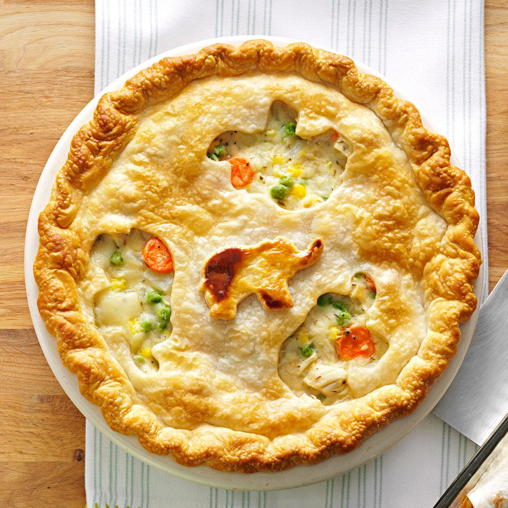

Chicken Pot Pie

Description
One of our most popular and top-rated meals of all time, this Classic Chicken Pot Pie has a flaky, buttery crust, a creamy sauce, and a hearty mix of chicken and vegetables your family will love. Plus, this homemade chicken pot pie is super easy to prep, making it a great recipe for beginner cooks and busy families alike.
Ingredients
Crust
- 1
box (14.1 oz) refrigerated Pillsbury™ Pie Crusts (2 Count), softened as directed on box
Filling
- 1/3 cup butter or margarine
- 1/3 cup chopped onion
- 1/3 cup all-purpose flour
- 1/2 teaspoon salt
- 1/4 teaspoon pepper
- 1 3/4 cups Progresso™ chicken broth (from 32-oz carton)
- 1/2 cup milk
- 2 1/2 cups shredded cooked
chicken or turkey
- 2 cups frozen mixed vegetables,
thawed
Steps
- Heat oven to 425°F. Prepare pie crusts as directed on box for Two-Crust Pie using 9-inch glass pie pan.
- In 2-quart saucepan, melt butter over medium heat. Add onion; cook 2 minutes, stirring frequently, until tender. Stir in flour, salt and pepper until well blended. Gradually stir in broth and milk, cooking and stirring until bubbly and thickened.
- Stir in chicken and mixed vegetables. Remove from heat. Spoon chicken mixture into crust-lined pan. Top with second crust; seal edge and flute. Cut slits in several places in top crust.
- Bake 30 to 40 minutes or until crust is golden brown. During last 15 to 20 minutes of baking, cover crust edge with strips of foil to prevent excessive browning. Let stand 5 minutes before serving.